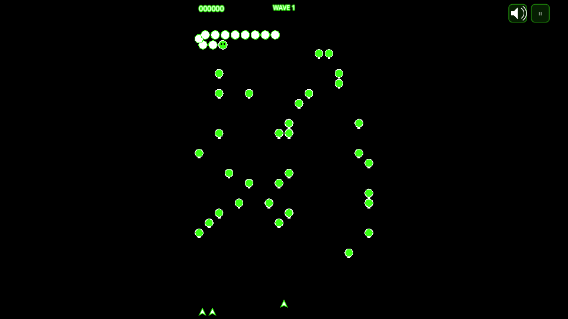
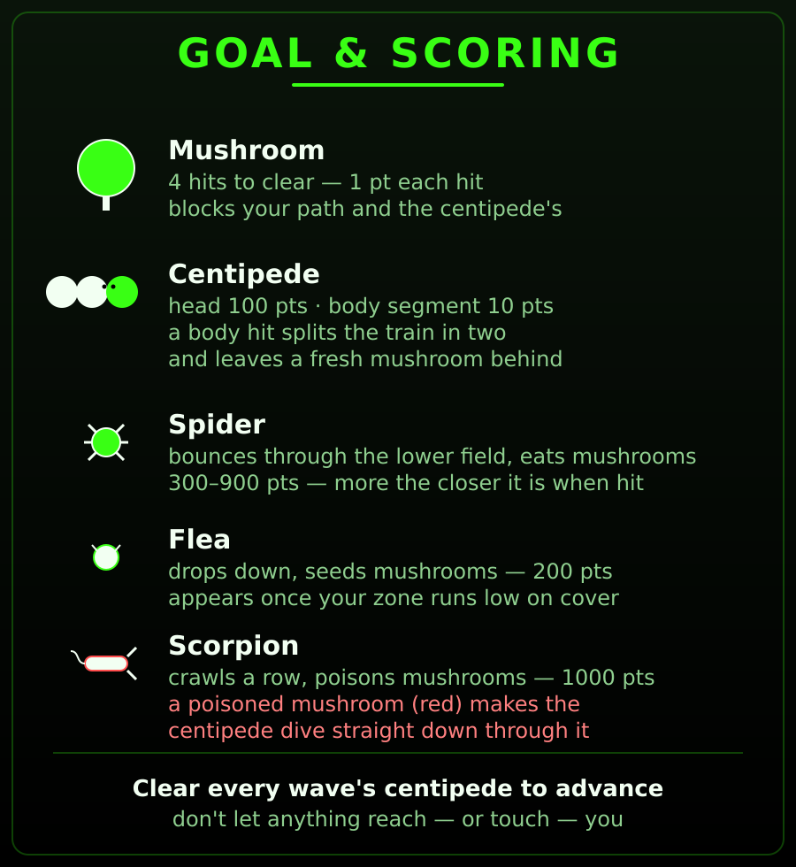
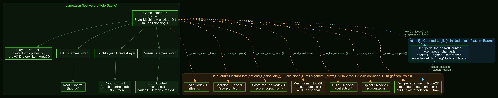
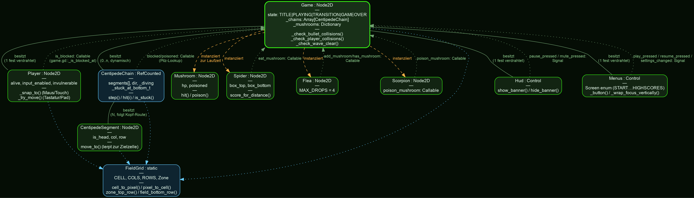

GDScript-Dateien — Bedeutung & Modularisierung
ein einziger Ort kennt Score, HP und wer wen berührt
Anders als bei den anderen Projekten in diesem Lernpfad besitzt hier keine
Gefahr/kein Ziel eine eigene Kollisionslogik — game.gd ist der einzige Ort, der
„was hat was berührt" überhaupt beantwortet (Modul 02 erklärt, warum). Jede andere Datei
kennt nur ihre eigene Bewegung/Zeichnung und meldet sich per Callable zurück,
wenn game.gd etwas wissen will (Modul 04).
| Bereich | Dateien | Zweck |
|---|---|---|
| Einstieg / State-Machine / Kollision |
game.gd | Einziger Ort, der Spielzustand (TITLE→PLAYING→TRANSITION→GAMEOVER),
Score/Leben/Welle UND jede Kollisionsprüfung kennt. Spawnt alles, verbindet alle
Callables/Signale. |
| Centipede- Bewegung |
centipede_chain.gd centipede_segment.gd |
CentipedeChain ist reine RefCounted-Logik (kein Node,
kein Platz im Szenenbaum) — entscheidet Richtung/Split/Tauchgang/Stuck-Timeout für
eine ganze Kette. CentipedeSegment ist der zugehörige Node2D, der nur
zwischen zwei Zellen interpoliert und sich zeichnet. |
| Spieler | player.gd | Bewegung (Tastatur/Gamepad SPEED-gedeckelt, Maus/Touch 1:1-Snapping), Schießen, Unverwundbarkeits-Blinken. |
| Feld & Gegner | mushroom.gd spider.gd flea.gd scorpion.gd bullet.gd |
Jede Klasse zeichnet nur sich selbst und bewegt sich selbst — keine kennt Punkte, HUD oder den Spieler direkt. |
| Feedback | score_popup.gd | Kurzes „+N"-Textpopup an der Trefferstelle, friert sich nach 0,5s selbst weg. |
| UI | hud.gd menus.gd touch_controls.gd ui_style.gd mute_icon.gd |
HUD zeigt Score/Welle/Leben/Pause/Mute + Banner; menus.gd baut
alle Screens (Start/Settings/Sound/Pause/Game Over/Hilfe/High Scores)
komplett im Code, ein gemeinsamer Panel-Container wird pro Screen neu befüllt. |
| Daten / Persistenz |
field_grid.gd game_settings.gd hall_of_fame.gd sound_manager.gd |
FieldGrid ist die gemeinsame Koordinatenwelt (Zelle ↔ Pixel),
von praktisch jeder anderen Datei importiert. Rest ist static/Autoload,
kein Node im Baum außer Snd. |
| Diagnose | _selftest.gd | Headless-Parse-Check + Logik-Assertions (Chain-Split, Gift-Tauchgang, Stuck-Timeout — siehe Modul 03 C). |


_draw()-SpritesSzenenaufbau & Kollisionsmodell
eine feste Szene, alles Übrige zur Laufzeit instanziiert — und kein einziges Area2D
Genau wie bei den Schwesterprojekten gibt es nur eine fest verdrahtete
Szene, game.tscn. Alles, was während des Spiels an Pilzen/Gegnern/Kugeln
auftaucht, wird zur Laufzeit instanziiert. Eine Besonderheit gegenüber
Tetris/Pacman/Galaga: CentipedeChain selbst ist kein Node —
eine reine RefCounted-Klasse, die N CentipedeSegment-Node-Referenzen
hält und ihnen jeden Tick eine neue Zielzelle zuweist. Sie lebt nirgends im Szenenbaum, nur
in game.gds _chains-Array.

CentipedeChain sitztKein Area2D — Kollision ist ein einziger Distanz-Check pro Frame
Jede andere Godot-2D-Vorlage in diesem Lernpfad nutzt Area2D +
area_entered-Signale mit echten Kollisionsschichten. Hier bewusst nicht:
das Spielfeld ist ein festes Zellgitter (FieldGrid, 18×28 Zellen à 30px), und
praktisch jede Gefahr bewegt sich ohnehin nur zwischen Zellmittelpunkten — ein simpler
Vector2.distance_to()-Vergleich pro Frame ist hier günstiger und direkter als
ein Physik-Layer-Setup für ein knappes Dutzend verschiedener Objekttypen. Der Preis: die
Prüfreihenfolge in _check_bullet_collisions() entscheidet, WEM eine Kugel
„gehört", wenn sich zwei Treffer im selben Frame überlappen würden — es gibt keinen
Physik-Server, der das für einen entscheidet.
| Reihenfolge | Prüfung | Bei Treffer |
|---|---|---|
| 1 | _bullet_vs_mushroom() | Pilz nimmt Schaden/stirbt, Kugel weg — continue zur nächsten Kugel, andere Checks entfallen für diese Kugel |
| 2 | _bullet_vs_centipede() | Segment/Kopf stirbt, Kette splittet ggf. |
| 3 | _bullet_vs_spider() | Punkte nach Nähe zum Spieler gestaffelt |
| 4 | _bullet_vs_flea() | 200 Punkte fix |
| 5 | _bullet_vs_scorpion() | 1000 Punkte fix |
_check_player_collisions() läuft spiegelbildlich (Centipede-Segmente → Spider →
Flea → Scorpion, erster Treffer gewinnt), aber nur bei not _player.invulnerable
— siehe Modul 03 C.
Wesentliche Code-Ausschnitte
Steuerung → Centipede-Kette → Bottom-Row-Fix → Gegner-KI → Zustandsautomat → Punkte
ASteuerung — SPEED-Deckel für Digital, 1:1-Snapping für Zeiger
Tastatur/Gamepad haben keine „aktuelle Zielposition", nur eine Richtung — dafür bleibt
die SPEED-Konstante reserviert. Maus/Touch geben dagegen bereits eine absolute Zielposition
vor; ein geschwindigkeitsgedeckeltes move_toward() dorthin läse sich als
Nachziehen, sobald der Zeiger schneller springt als das Tempo-Limit — direktes Zuweisen
(pro Achse, damit ein Pilz nur die blockierte Achse stoppt) hat dieses Problem nicht:
func _snap_to(target: Vector2) -> void:
var tx := Vector2(target.x, position.y)
if not is_blocked.call(tx):
position.x = target.x
var ty := Vector2(position.x, target.y)
if not is_blocked.call(ty):
position.y = target.yBCentipede-Bewegung — eine Kette folgt der Route ihres Kopfes
Nur der Kopf entscheidet pro Grid-Tick die Richtung; jede neue Kopfzelle wird vorn in
_path geschoben und auf segments.size() gekappt — Segment i
übernimmt einfach _path[i] ("Schlange folgt der Route des Kopfes", klassischer
Trick, macht auch Splits trivial: _reseed_path() sät _path aus den
AKTUELLEN Zellen neu, kein sichtbarer Sprung).
func _advance() -> void:
var head := _path[0]
var new_cell: Vector2i
if _diving:
if head.y >= FieldGrid.field_bottom_row():
_diving = false
new_cell = head
else:
new_cell = Vector2i(head.x, head.y + 1)
else:
var next_col := head.x + dir
var in_bounds := next_col >= 0 and next_col < FieldGrid.COLS
if in_bounds and not blocked.call(next_col, head.y):
new_cell = Vector2i(next_col, head.y)
elif in_bounds and poisoned.call(next_col, head.y):
_diving = true # Gift-Pilz: KEIN Wenden, senkrecht durchtauchen
new_cell = Vector2i(head.x, mini(head.y + 1, FieldGrid.field_bottom_row()))
else:
var new_row: int = mini(head.y + 1, FieldGrid.field_bottom_row())
dir = -dir # normale Blockade: wenden + eine Reihe tiefer
new_cell = Vector2i(head.x, new_row)
_path.push_front(new_cell)
...Ein Treffer auf ein Rumpfsegment teilt die Kette in zwei unabhängige Züge — die Methode
gibt genug zurück, dass game.gd Punkte/Pilz/Sound/Popup entscheiden kann, ohne
selbst irgendetwas über den internen Zustand der Kette zu wissen:
func hit(index: int) -> Dictionary:
var seg := segments[index]
var cell := Vector2i(seg.col, seg.row)
var tail: Array[CentipedeSegment] = []
if index + 1 < segments.size():
tail = segments.slice(index + 1, segments.size())
segments = segments.slice(0, index)
seg.queue_free()
var new_chain: CentipedeChain = null
if not tail.is_empty():
new_chain = CentipedeChain.new()
new_chain.segments = tail
...
tail[0].is_head = true # Rumpfsegment wird zum neuen Kopf
new_chain._reseed_path()
if not segments.is_empty():
segments[0].is_head = true
_reseed_path()
return {"cell": cell, "new_chain": new_chain, "empty": segments.is_empty()}CDer Bottom-Row-Fund — kein sicherer Schussabstand, zwei Fixes
Aus einem Live-Test mit dem Nutzer (2026-09-17/18): reicht eine Kette bis zur untersten
Feldreihe, zickzackt sie dort unbegrenzt weiter (Zeile im Code oben:
mini(head.y + 1, field_bottom_row()) — die Reihe steigt nie über das Feldende).
Das ist exakt dieselbe Reihe, in der sich der Spieler bewegt. Kugeln fliegen nur nach oben —
um einen Kopf DORT zu treffen, muss der Spieler fast auf gleicher Höhe stehen, und dieser
Abstand liegt fast genau im Berührungs-Todesradius. Reiner Nahkampf, kein Sniping möglich.
player.gd::set_invulnerable(),
RESPAWN_INVULN = 2.0s): sobald die Kontrolle nach einer „GET READY!"-Pause
zurückkommt, ignoriert _check_player_collisions() Berührungen für 2 Sekunden
— Bewegung/Schuss bleiben aktiv, nur die Kollision wird übersprungen, Sprite blinkt sichtbar.
centipede_chain.gd::STUCK_AT_BOTTOM_TIMEOUT
= 15.0s): sitzt der KOPF einer Kette 15 Sekunden ununterbrochen in der untersten Reihe —
unabhängig von der Rumpflänge — entfernt game.gd die GESAMTE Kette automatisch,
Segment für Segment über denselben hit()-Pfad wie ein echter Treffer (jedes
Segment wird der Reihe nach zum „Kopf" und zählt 100 Punkte — exakt das, was ein
Spieler bekäme, der die Kette selbst leerschießt). Garantiert, dass jede Welle in
endlicher Zeit fertig wird.
func _auto_clear_stuck_head(chain: CentipedeChain) -> void:
_wave_auto_cleared = true
var current: CentipedeChain = chain
var total_pts := 0
var last_cell := Vector2i.ZERO
while current != null and not current.segments.is_empty():
var result: Dictionary = current.hit(0) # immer den AKTUELLEN Kopf
last_cell = result.cell
total_pts += 100
current = result.new_chain # Rest-Rumpf wird zum nächsten Kopf
_add_mushroom_from_hit(last_cell)
_add_score(total_pts)
_spawn_score_popup(FieldGrid.cell_to_pixel(last_cell.x, last_cell.y), total_pts)
_chains.erase(chain)_wave_auto_cleared lässt _check_wave_clear() danach
„AUTO-CLEARED!" statt „CLEARED!" anzeigen — der Spieler soll den Unterschied erkennen (siehe
Teil E unten).
DGegner-KI — drei sehr kleine, unabhängige Zustandsmaschinen
Flea fällt spaltengerade senkrecht und sät dabei neue Pilze — gedeckelt, seit ein Lauf über alle ~28 Reihen im Schnitt ~10 Pilze in EINER Spalte sätte (praktisch eine Wand):
const DROP_CHANCE := 0.35 # pro gekreuzter Reihe
const MAX_DROPS := 4 # hartes Limit pro Fall-Lauf (2026-09-18-Fix)
...
if _drops_left > 0 and _drop_t <= 0.0 and randf() < DROP_CHANCE and not has_mushroom.call(col, row):
add_mushroom.call(col, row)
_drop_t = DROP_COOLDOWN
_drops_left -= 1Spider springt erratisch in einer Bounce-Box herum und frisst jeden Pilz, den er kreuzt — die Box deckt seit demselben Fund das GESAMTE Feld ab, nicht nur die Spielerzone (sonst dünnt nichts je den oberen Bereich aus, den die Flea zusetzt):
var top: float = FieldGrid.FIELD_TOP # ganzes Feld, nicht nur Spielerzone
var bottom: float = FieldGrid.FIELD_TOP + FieldGrid.ROWS * FieldGrid.CELL
var zone_top: float = FieldGrid.cell_to_pixel(0, FieldGrid.zone_top_row(_cfg.movement_zone)).y
_spider.setup(Vector2(start_x, zone_top), top, bottom) # startet sichtbar in SpielernäheScorpion kriecht geradlinig durch eine Reihe außerhalb der Spielerzone und vergiftet jeden gekreuzten Pilz — die eigentliche „Gift-Quelle" für Teil B oben:
func _process(delta: float) -> void:
position.x += dir * SPEED * delta
var cell := FieldGrid.pixel_to_cell(position)
if FieldGrid.in_bounds(cell.x, row):
poison_mushroom.call(cell.x, row) # mushroom.gd::poison(), rot eingefärbtEZustandsautomat & Banner — ein Mechanismus, drei Texte
Ein einziger _begin_transition(text, duration, on_done) friert Kette-Ticks,
Gegner-Spawns, Kollisionen UND Spieler-Input für duration Sekunden ein, während
_hud.show_banner() das zentrierte Label ein-/hält-/ausblendet:
| State | Banner | Dauer | Auslöser |
|---|---|---|---|
TITLE | — | — | App-Start / Main Menu; _player.input_enabled = false |
TRANSITION | „GET READY!" | 3,0s | Neue Runde ODER Respawn nach Treffer — Spieler steht sichtbar am Spawnpunkt, aber bewegungsunfähig |
TRANSITION | „CLEARED!" | 2,0s | _chains.is_empty() durch echte Treffer |
TRANSITION | „AUTO-CLEARED!" | 2,0s | _chains.is_empty(), aber _wave_auto_cleared war während dieser Welle mindestens einmal true |
PLAYING | — | — | Zwischen den Bannern — volle Kette-/Kollisions-/Spawn-Logik läuft |
GAMEOVER | — | — | Letztes Leben verloren — kein Banner, direkt zum Game-Over-Screen |
FPunktevergabe
| Ereignis | Punkte | Quelle |
|---|---|---|
| Pilz-Treffer (nicht zerstört) | 0 | game.gd — _bullet_vs_*() / _auto_clear_stuck_head() |
| Pilz zerstört | 1 | |
| Centipede-Rumpfsegment | 10 | |
| Centipede-Kopf (auch nach Split/Auto-Clear — jedes Segment wird der Reihe nach zum Kopf) | 100 | |
| Spider — je näher am Spieler beim Treffer, desto mehr | 900 / 600 / 300 / 100 | |
| Flea | 200 | |
| Scorpion | 1000 |
Signale & Callables
wer meldet was an wen — und warum die meisten Verbindungen KEINE Signale sind
Nur die UI-/Menü-Schicht nutzt echte Godot-signals (Nutzer-Events, an
beliebig viele Hörer). Jede Gefahr/jedes Gegner-Skript dagegen bekommt eine feste,
1:1 Frage-Antwort-Beziehung zu game.gd per
Callable-Feld — kein Signal-Overhead für „darf ich mich hier hinbewegen?"
oder „friss diesen einen Pilz", wenn es sowieso immer nur einen einzigen Empfänger gibt.
| Signal | Emitter | Empfänger | Bedeutung |
|---|---|---|---|
fire_requested(from_pos) | Player | Game._on_fire_requested | Bullet spawnen + Schuss-Sound |
pause_pressed / mute_pressed | Hud | Game._toggle_pause / _toggle_mute | HUD-Buttons oben rechts |
fire_down / fire_up | TouchControls | Lambda → _player.fire_held | Touch-FIRE-Button (getrennt vom Bewegungs-Finger) |
play_pressed / resume_pressed /restart_pressed / quit_to_menu_pressed | Menus | Game | Menü-Navigation |
settings_changed(cfg) | Menus | Game._apply_settings | Bewegungszone/Schwierigkeit live übernehmen |
| Callable-Feld | Auf | Zeigt auf | Zweck |
|---|---|---|---|
is_blocked | Player | Game._is_blocked_at | Pilz-Lookup für Spielerbewegung |
blocked / poisoned | CentipedeChain | Game._cell_blocked / _cell_poisoned | Pilz-/Gift-Lookup für Kopf-Entscheidung |
eat_mushroom | Spider | Game._spider_eat | Pilz an aktueller Zelle entfernen |
add_mushroom / has_mushroom | Flea | Game._add_mushroom / Lambda | Neuen Pilz säen, Doppel-Belegung vermeiden |
poison_mushroom | Scorpion | Game._poison_mushroom_at | Pilz an aktueller Zelle vergiften |
CentipedeChain besitzt zusätzlich ein
reached_player: Callable-Feld (wird sogar korrekt beim Split an die neue
Teilkette weitergereicht) — aber game.gd setzt es nie, und nichts ruft es
je auf. Spieler-Berührung läuft stattdessen zentral über
_check_player_collisions()s Distanz-Check jeden Frame (Modul 02);
dieses Feld ist toter Code aus einem früheren Entwurf.
Optional: UML-Übersicht
wo genau die RefCounted-Klasse zwischen den Nodes sitzt
Eine vereinfachte Klassen-/Beziehungsübersicht der oben genannten Kernklassen — Rauten
bedeuten „besitzt", gestrichelte orange Pfeile „instanziiert zur Laufzeit", gepunktete
blaue Linien einen Callable-Rückkanal oder eine reine Utility-Referenz
(FieldGrid).

CentipedeChain bewusst blau markiert: die einzige zentrale Klasse ohne eigenen Platz im SzenenbaumUiStyle,
HallOfFame, GameSettings, SoundManager,
Bullet oder ScorePopup sind der Übersichtlichkeit halber
ausgelassen.